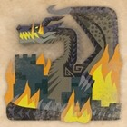
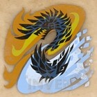
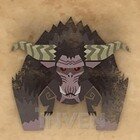

몬스터 도감
| 몬스터 | 별명 | 종류 | 파괴부위 | 약점부위 | 유효속성 | 상태이상 | |||||||||||
|---|---|---|---|---|---|---|---|---|---|---|---|---|---|---|---|---|---|
|  | 밀라보레아스 | 흑룡 | 고룡종 | 머리 날개 몸통 |
머리 | 머리 | |||||||||||
|
|
얼음 칼날을 찬 벨리오로스 |
빙아룡 | 비룡종 | 머리 가시 꼬리 |
머리 | 머리 | 머리 | ||||||||||
|  | 알바트리온 | 황흑룡 | 고룡종 | 뿔 날개 꼬리 |
머리 앞다리 |
머리 앞다리 |
몸통 꼬리 |
(밤) (여명) |
(여명) (밤) |
||||||||
|
|
사납게 터지는 브라키디오스 |
쇄룡 | 수룡종 | 머리 앞다리 꼬리 |
머리 꼬리 |
머리 | 머리 꼬리 |
||||||||||
|
|
격앙 라잔 | 금사자 | 아수종 | 뿔(2회) 앞다리 |
머리 | 머리 | 머리 | ||||||||||
|
|
무페토-지바 | 명적룡 | 고룡종 |
머리 앞다리 날개 꼬리 |
앞다리 | 머리 | 날개 | ||||||||||
|
|
진오우거 아종 | 옥랑룡 | 아룡종 |
머리 앞다리 등 꼬리 |
머리 앞다리 |
머리 앞다리 |
머리 앞다리 |
||||||||||
|  | 라잔 | 금사자 | 아수종 | 뿔 앞다리 꼬리 |
머리 | 머리 | 머리 | ||||||||||
|
|
티가렉스 아종 | 흑굉룡 | 비룡종 | 머리 앞다리 꼬리 |
머리 앞다리 |
머리 | 머리 | ||||||||||
|
|
상처 입은 얀가루루가 |
흑랑조 | 조룡종 | 귀 부리 몸통 날개 꼬리 |
머리 꼬리 |
머리 | 머리 | ||||||||||
|
|
리오레우스 희소종 | 은화룡 | 비룡종 | 머리 날개 등 꼬리 |
날개 꼬리 |
날개 꼬리 |
날개 꼬리 다리 |
||||||||||